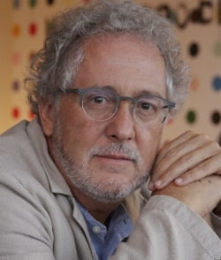

Escritor, traductor y periodista. Nació en Medellín en 1958. Es hijo de Cecilia Faciolince y Héctor Abad Gómez, un destacado médico, profesor universitario y defensor de los Derechos Humanos, quien además fue el fundador de la Escuela Nacional de Salud Pública.
En 1977 realizó estudios de filosofía en la Universidad Pontificia Bolivariana de Medellín, y de Medicina en la Universidad Javeriana de Bogotá. En 1978 viajó a México y estudió talleres de poesía y narrativa en La Casa del Lago, el primer campus cultural de la Universidad Autónoma de México. En 1979 regresó a Medellín y comenzó a estudiar Periodismo en la UPB. De esta carrera fue expulsado en 1981 por escribir un artículo irreverente contra del Papa. En 1982 hace estudios de inglés en Nueva York y más tarde se va a Italia en donde estudia Lenguas y Literaturas Modernas en la Universidad de Turín. Regresa a Colombia en 1987, después de graduarse “cum laude” en Turín. En Agosto de ese año su padre es asesinado por paramilitares y debido a las amenazas que recibe se exilia primero en España (diciembre de 1987) y luego en Italia, en 1988, en donde trabaja como “lector de español” de la Universidad de Verona hasta 1992. Desde sus años de estudiante había empezado a traducir al castellano diverso autores italianos: Umberto Eco, Leonardo Sciascia, Italo Calvino, Tomasi di Lampedusa, Gesualdo Bufalino, Primo Levi y Natalia Ginzburg, entre otros. Estas traducciones se publicaron en libros y en suplementos literarios mexicanos.
En 1992 regresó a Colombia y desempeñó distintos oficios. Dirigió durante tres años la Revista de la Universidad de Antioquia y fue también director del Fondo Editorial de la Universidad EAFIT. Trabajó también como periodista y columnista para distintos medios colombianos: El Espectador, Cromos, El Colombiano, y las revistas Cambio y Semana.
En 1998 fue galardonado con el Premio Nacional de Periodismo Simón Bolívar en la categoría columna de opinión; recibió ese mismo premio en el año 2006. En 1999 fue corresponsal de la revista Cambio en Estados Unidos, con sede en Boston. En 2000, su novela Basura recibió el Primer Premio Casa de América de Narrativa Innovadora; en 2004, su novela Angosta fue premiada en China como la Mejor Novela Extranjera del Año; en 2006 recibió una beca del DAAD y vivió un año en Berlín.
En noviembre del año 2006, publicó su libro más celebrado, El olvido que seremos, en donde revive la historia de su padre, el doctor Héctor Abad Gómez, y las circunstancias de su asesinato. Por este libro ha recibido premios en Lisboa y en Washington.
Actualmente es columnista y asesor editorial del diario El Espectador. Colabora también con El País de Madrid, el NZZ de Zurich y otras publicaciones nacionales e internacionales. Sus novelas han sido traducidas a distintas lenguas, entre ellas inglés, portugués, italiano, chino, francés y alemán.